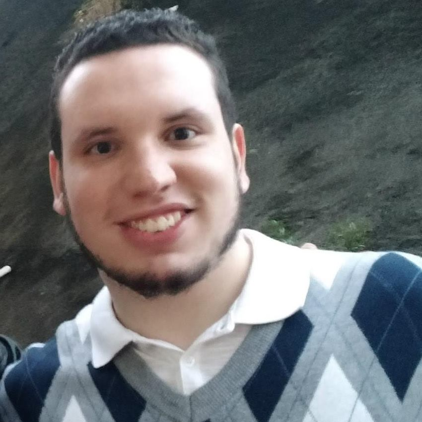

Javã Gabriel Rigamonti
Brasileiro, solteiro, 27 anos
Rua Tapajós – Vila Tupi – Praia Grande/SP – CEP 11703-340
Cel.:(13) 99204-4580 / Res.:(13) 3379-4600 / java.rigamonti@gmail.com
Analista/Desenvolvedor de Sistemas
FORMAÇÃO ACADÊMICA
07/2018 a 12/2019 - Cursando Técnico em Desenvolvimento de Sistemas – 2º Semestre/2º Módulo – Período Noturno – ETEC Praia Grande
08/2017 a 06/2018 - (Trancado)Administração – 2º Semestre – Período Diurno – Universidade Santa Cecília (UNISANTA)
02/2012 a 12/2016 - Lazer e Turismo – 8º Semestre – Período Vespertino – Universidade de São Paulo(USP)
QUALIFICAÇÕES
Pessoais: Dinâmico, organizado, proativo, criativo, educado, pontual, carismático, boas maneiras, responsabilidade, solucionador de problemas.
Interpessoal: Comunicativo verbal e não-verbalmente, trabalho bem em grupo, empatia, consciência social, bom ouvinte.
Informática:
- Hardware: Montagem e manutenção de computadores e noções de rede
- Software: Pacote Office, Internet, Visual Studio, NotePad++, Dev-C++, Sublime, Adobe PhotoShop, MySQL Workbench.
- Programação: Lógica de Programação, C++, C#, HTML5, CSS, Bootstrap, JavaScript, JAVA, SQL.
EXPERIÊNCIA PROFISSIONAL
- Atuando como Produtor de eventos autônomo – 03/2012 a 08/2015.
- Realizando eventos sociais, socioculturais;
- Responsável por compras;
- Contratação de mão-de-obra/Freelancers;
- Fechamento de caixa;
- Pagamentos.
- Trainee na LZT Jr. (Empresa Junior de Lazer e Turismo – EACH – USP) - 02/ 2014 a 12/2015.
A LAZER E TURISMO JÚNIOR EACH - USP é uma associação civil sem fins lucrativos e sem vinculação político-partidária ou religiosa, formada por alunos de graduação do curso de Lazer e Turismo da Escola de Artes, Ciências e Humanidades da Universidade de São Paulo. Oferece serviços principalmente de eventos, inventariação e recreação nas áreas de turismo e lazer.
- Elaboração de projetos e eventos acadêmicos-científicos;
- Participação efetiva no pré, trans e pós-evento;
- Realização de qualquer tarefa estabelecida nas reuniões ordinária.
- Gerente Geral no Viva La Carne Santos – 11/2015 a 9/2017.
- Contratação e gestão de pessoas;
- Treinamento;
- Contato com fornecedores/Compras;
- Coordenação Operacional;
- Verificação regular do estoque;
- Organização do Sistema Operacional.
IDIOMAS
Inglês – Intermediário
FORMAÇÃO COMPLEMENTAR
2006 – Montagem e Manutenção de Micro – Microlins – 96 horas
2014 – Organizador de Eventos – Senac – 180 horas